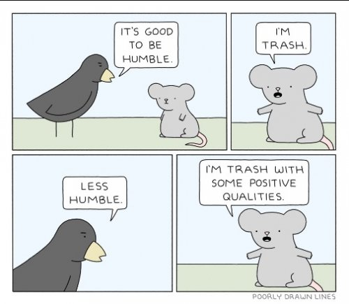
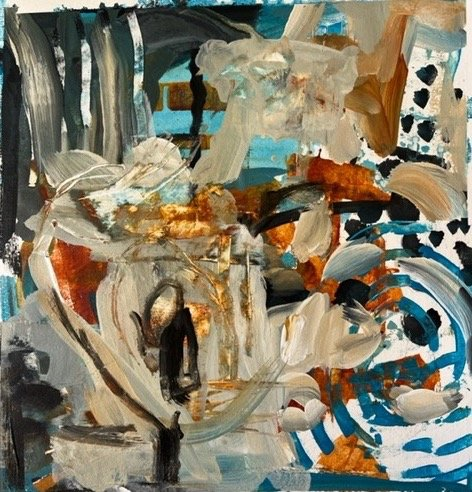

“I admit it's fun
To smear my face with paint,
Causing ev'ryone
To think I'm what I ain’t”
--Oscar Hammerstein
----------
"All the world’s a stage,
And all the men and women merely players;
They have their exits and their entrances;
And one man in his time plays many parts."
-- William Shakespeare
----------
"Henry Fonda was still throwing up before each stage performance, even when he was seventy-five. Fear doesn't go away."
--Steven Pressfield
So I’m taking another online painting class. It covers an approach that’s new to me. Hence, “class.”
There are many professional artists in the class. Their work is spectacular. Of course, the course info is new for them too. But they’re not producing sh*te, the way some others are. *cough*
We are supposed to post our work.
I don’t want to.
Let’s face it, my results suck. No I mean really. I mean ok yes I’ve been painting most of my life and yes I am good with being in the learner’s position.
But still.
The mind’s usual evaluation of performance leaps into high gear. It finds mine quite lacking.
How can I put such ridiculousness out there for anyone to see?
Though I do notice that even the pros who are posting magnificence are alsomaking, “It’s not very good,” apologies. In fact, every one of the class posts has some sort of head-down-toe-digging-into-the-dirt, “I’m sorry, it’s awful,” commentary.
So, pushing against the urge to hide, I posted. Though I couldn’t resist stating the obvious and obligatory, “Ugh” along with it.
And then I got a few compliments.
Oh HELL no, now we’re going too far.
There’s already plenty of pretending going on. Do not make me have to do more.
Do not make me have to smile and say, “You think so? Oh thank you so much!” instead of crawling away snarling. Do not ask me to pretend this shite is good. Instead, let’s point out how it sucks. LOOK! Look at this mess!
Do not compliment the self. We hate the self. Do not encourage it.
Especially in performance situations.
And let’s face it, every life situation is a performance situation.
Because for the entirety of our lives, humans package the self to try to make it look good.
We try to make it look sexy or kind or confidant. We try to make it look not too visibly crazy or depressed or scared or miserable. In those times when things are good, we try to make it look not too proud, too happy, too “full of ourselves.”
The self is concerned with image. It’s performative. It’s acting. It’s hiding. It’s pretending.
Always.
We call it performance anxiety for a reason.
All we want is for others to buy the act.
But then life situations keep providing opportunity to risk exposure of the fakery. The sports competition, the speech or concert, having to read our paper in front of the class. Even a smile at someone in the grocery store can be cause for analytical self-review.
Did I pull this off?
And to make it worse, the outcome is never under our control. We may give the concert and get everything right, or miss a few notes despite relentless practice— we don't know, we have to wait and see how it goes, because neither result is in our hands.
Which is why so many people walk around with some level of anxiety.
I mean, here the whole act depends on our presenting a good image, and it turns out we have no control over it.
This can be terrifying.
And the thing is, while thought busily focuses on the content of the show- whether the leg lines are good or if the whoosh of the ball is right- hardly anyone seems to notice what is really being hidden by all that fear of performing badly.
We think it's some version of, I’m messed up and not good enough and have to hide this, that we’re afraid of exposing.
When it’s not that at all.
It’s exposure of nothing-but-a-concept, pretending to be a real something.
In every moment, we risk being seen- not for what we are, but for what we are not.
Mind tells all of us that it’s our non-adequacy and non-goodness which needs to be hidden,
Instead of our non-existence.
This is partly how thought creates reality.
A conveniently painful “reality” which comes with imposter syndrome and a desperation to fix the self so it can fall into line better.
No individual is exempt from this.
Because no matter how much we play-act, humans will always be nothing, faking at being something.
So maybe instead of pretending otherwise, we can expect to feel like frauds.
Expect the usual sense of never-enoughness.
Expect to be afraid.
Always.
Maybe at least that, we don’t have to hide.
Maybe at least that, we are doing perfectly.
No matter how
we act.
----------
Click here to get your Mind-Tickled every week.
Watch Judy and Shiv Sengupta discuss spiritual anarchy
Click here to watch Judy on Buddha at the Gas Pump
Click to watch Judy and Walter have fun chatting about about
nonduality, the self, consciousness, awareness, free will
and other light and breezy stuff
Judy And Robert Saltzman talk nonduality
and https://www.youtube.com/watch?v=7fv_vsvaejs
and https://www.youtube.com/watch?v=3DAn8Rqg3I0
----------
“All fear is the fear of no-self.”
--Jed McKenna
----------
“Whatever the image of yourself, it’s a mask and it’s hiding emptiness.”
--Adyashanti
----------
"Are you willing to risk
Everything, to be
Totally and utterly exposed?
Are you willing to see
How you defraud,
Demean and trivialize
The totality of your being
By relegating it to
This psychosomatic device
Called you?
The ability to discriminate
Between what appears to be and
What-Is is
The mark of the wise..."
wu'hsin

